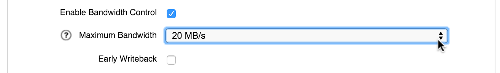

Controlling Write Bandwidth
By default, the Avere cluster uses bandwidth to the core filer as follows:
- When the cluster writes changed data back to the core filer, it uses all available network bandwidth between the cluster and the core filer.
- The cluster does not write changed data back to the core filer until the writeback delay value is reached.
You can change either of these default behaviors on a per-core filer basis from the Settings > Core Filer > Core Filer Details page.
Reasons you might want to change the default behaviors include the following:
- You want to limit the bandwidth consumed between the cluster and the core filer, to make additional bandwidth available for other network traffic.
- You want the cluster to write changed data back to the core filer before the writeback delay value is reached (that is, enable early writeback). This increases the performance demands on the cluster but can also result in more uniform load balancing across the storage infrastructure.
Note
- If you want the cluster to use early writeback, you must also specify a maximum bandwidth.
- Bandwidth throttling is not honored if a high-priority writeback to a particular core filer is in progress. The specified throttling settings resume after the high-priority writeback completes.
Changing Writeback Settings
To change the default bandwidth use or writeback timing for a core filer, follow these instructions.
Open the Core Filer Details settings page for that core filer.
In the Edit Filer panel, click the Enable Bandwidth Control checkbox. When this box is checked, the Avere Control Panel displays the Maximum Bandwidth and Early Writeback controls.
Use the Maximum Bandwidth drop-down to set the maximum available bandwidth for writing data to the core filer. Values range from 20 MB/second to 800, or select Custom to enter a different value.
If you select Custom, enter a value in MB per second in the field provided. The value must be an integer between 1 and 800.
If you also want to set early writeback on the core filer, click the Early Writeback checkbox.
After making changes, click Submit to apply the new settings.
{kind=link}